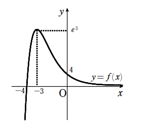

解答・解説[6](2)
\((1)ででたa=-4 をf(x)に代入すると\)
\(f(x)= \dfrac{x+4}{e^x}\)
\(ここで増減を調べるために微分していく\)
\begin{eqnarray*}
f'(x)&=& \dfrac{1・e^x-(x+4)e^x}{(e^x)^2}\\
f'(x)&=& \dfrac{1-x-4}{e^x}\\
f'(x)&=& \dfrac{-x-3}{e^x}\\
f'(x)&=& -\dfrac{x+3}{e^x}
\end{eqnarray*}
\(よってf(x)の増減表は\)
$$
\begin{array}{c|ccccc}
x & \cdots & -3 & \cdots & \\
\hline
f’(x) & + & 0 & – & \\
\hline
f(x) & \nearrow & 極大 & \searrow &
\end{array}
$$
\(ここでf(-3)=e^3より\)
\(x=-3のとき、極大値 e^3\)
\(また、\displaystyle \lim_{ n \to \infty } \frac{x+4}{e^x} =0 , \displaystyle \lim_{ n \to \infty } \frac{x+4}{e^x} = -\infty
よりグラフは下図になる。\)

戻る